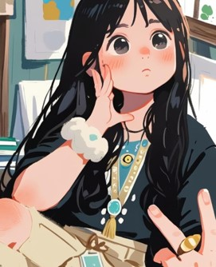

TAN •ᴗ• VINNIE
Welcome to My Portfolio
After completing my degree, I graduated with hands-on experience in system development through my internship. During my studies, I worked on a variety of projects spanning web development, system development, and creative design including posters and videos. This portfolio showcases my journey in building functional, user-focused systems while blending technical skills with creative problem-solving. From developing robust backend solutions during my internship to designing intuitive interfaces, each project reflects my passion for creating technology that is both powerful and engaging.
About Me
I am a recent BSc (Hons) Multimedia Computing graduate with a strong passion for technology and design. I thrive in dynamic environments, where I can approach challenges with creativity and innovative problem-solving. My interests lie in developing systems, designing visually engaging websites, and creating impactful visual content.
Zodiac: Cancer (July)
MBTI: ENTP-A
Strengths: Intuitive Problem Solver, Quick learner and adaptable, Strong collaborative skill
Weaknesses: Tendency to overlook details, Impatient with routine tasks
Expertise: Web Development, UI/UX Design, Digital Media
Work Style: Work best in environments that allow for flexibility and creativity, enjoy brainstorming ideas and collaborating with other
Philosophy: Constantly seeking new challenge
Working Experience
Internship - Junior Programmer
Synersion Consulting Sdn Bhd, Kepong(09/2025 – 02/2026)
- Develop ERP programs using Progress 4GL for barcode and inventory systems
- Successfullly worked with Agile development team model
- Tested, debugged, and supported batch processing and system integration
- Collaborated with consultants to deliver features based on business requirements
Sales Assistant
United Optometry, United Point(05/2024 - Present)
- Welcome and greet customers
- Maintain a fully stocked store
- Recommend and display items that match customer needs
- Accurately describe product features and benefits
Marketing Admin & Tutor
SY Knowledge Hub, Cheras(07/2024 – 09/2024)
- Manage social media content and marketing materials
- Handle administrative tasks such as reports, data entry, and filing
- Plan and deliver lessons based on student level
- Monitor student progress and give constructive feedback
Education Background
BSc (Hons) Multimedia Computing
YPC International College, Liverpool John Moores University08/2022 - 02/2026
Descriptions:
- A collaboration program in YPC International College
- Class 1 (First Class Honour): 72%
Foundation in Business and IT
YPC International College, Cheras07/2021 - 07/2022
Descriptions:
- CGPA: 3.76
Secondary School
SMK Sinar Bintang01/2016 – 03/2021
Descriptions:
- SPM: 1A, 2A-, 1B+, 3B, 2C, 1D
- Sub-science Stream + Art
- Leadership Position: Prefect (F2 - F5), Treasurer of Prefect (F5)
Thank You for Visiting ! Let's Connect
Like the moon influences the tides, let's create something amazing together.